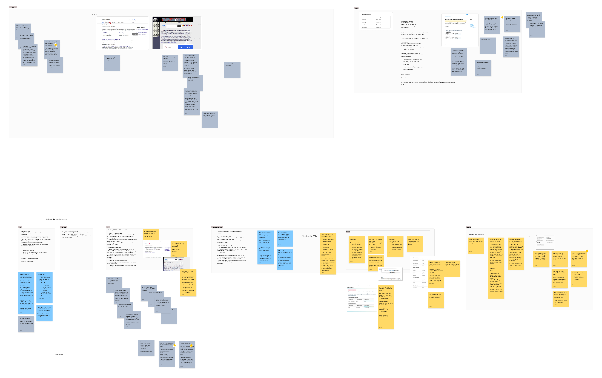
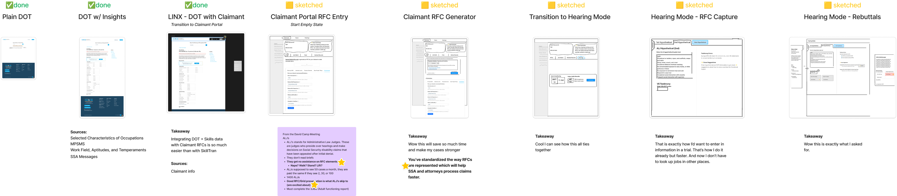
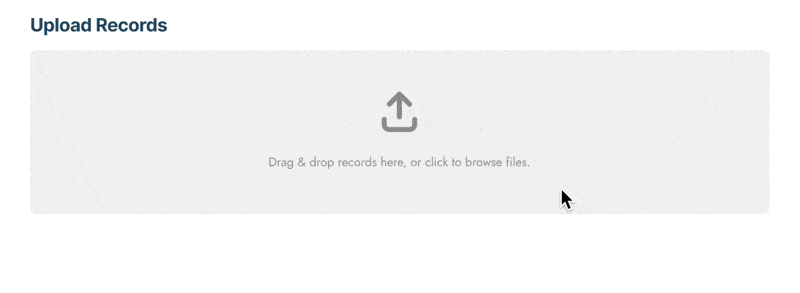
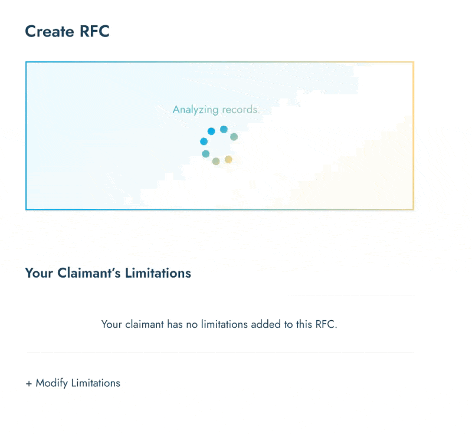
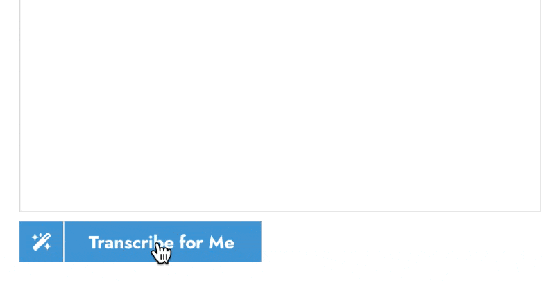
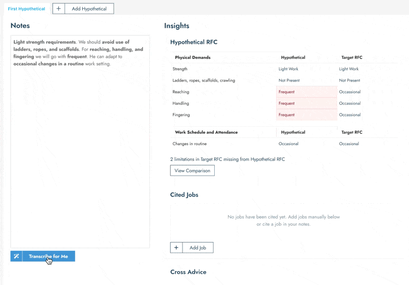

Claims for Social Security Disability benefits often end up in front of an Administrative Law Judge, who relies on expert testimony about how various disabilities affect the potential for employment. An attorney's job is to prove to the judge that a claimant is unable to work based on their disabilities. Proving this can be very challenging, often entailing a dictionary-like knowledge of the job sector and quick, off-the-cuff rebuttals of expert testimony.
Mindset's goal was to form a strategic partnership with one of the major disability attorney groups by presenting a forward-thinking vision of how to solve this problem with technology. As Lead Product Designer on the project, I performed UX research to understand the space and the key pain points of attorneys. I then built a convincing, high-fidelity prototype designed to "wow" our partner.
Working with the Product Manager and our AI Engineer, I conducted interviews with several attorneys and a judge to better understand the problems faced by each role. We listened to hearings and read through transcripts of trials to get a firsthand experience of the pace and setting.

With this research, we identified a few key use cases that we needed to nail in order to truly impress our partners. These key moments were captured in a storyboard along with the other features we'd prototype. This was also an opportunity to sync up with leadership and ensure our direction aligned with their vision for the demo.

Because we wanted to wow our partner, the demo we were building needed to be highly refined, especially in key moments. We didn't want to explain why things didn't work or hand-wave incomplete interactions. To achieve this, our demo stayed on very well-defined rails. However, there were still points that required convincing interaction — we used Figma animations to produce these effects and help demonstrate what was happening at these moments.




Putting all of these interactions together into an end-to-end demo video created an impression of a well-thought-out, fully-functional platform, rather than just scaffolding.
After presenting the demo, the partner was ecstatic, saying we "blew their minds". The concept led to us partnering with them for other work and continues to be used as a concept for our team when thinking about future uses for AI.